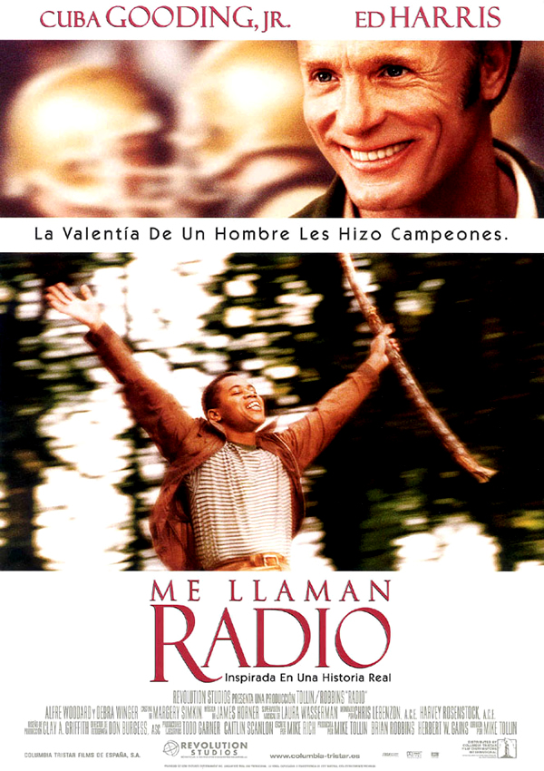

Radio: Me llaman radio.
Sinopsis
Radio pasa desapercibido entre las demás personas, hasta que el entrenador del equipo de fútbol se fija en él y trata de ayudarlo e integrarlo en el equipo, en la escuela y en general en la vida. La película se desenvuelve con un grado de ternura por parte del entrenador y con un grado de inocencia por parte de Radio. James Robert Kennedy nacido el 14 de octubre de 1947 en (Anderson, Carolina del Sur, Estados Unidos), creció la mayor parte de su vida fascinado por el fútbol y por la radio. Su apodo, Radio, se lo puso la gente de la ciudad por la radio que llevaba con él a todas partes. Aún asiste al Instituto T. L. Hanna y entrena al equipo de fútbol americano.
-

Basada en hechos Reales:

Kennedy se ganó el apodo de 'Radio' a mediados de la década de 1960 cuando comenzó a aparecer en el campo de fútbol americano del Hanna High School con un transistor. Los entrenadores, jugadores y estudiantes empezaron a interactuar con él y al final asumió tareas como entrenador asistente y animador del conjunto. Aquejado de una parálisis cerebral que no le permitía leer o escribir, Kennedy se mantuvo toda la vida inscrito como un estudiante de tercer año del centro."Las historias podrían llenar las páginas de un libro extenso, cada una mostrando la inocencia infantil de 'Radio' y el corazón amoroso que existía dentro de él", dijo el instituto en un comunicado". El 15 de diciembre de 2019, a los 73 años, murió James 'Radio' Kennedy, el hombre cuya vida inspiró la película 'Me llaman Radio' estrenada en 2003 con Cuba Gooding Jr. como protagonista. Según anunció el instituto Hanna High School, Kennedy falleció en un centro de cuidados paliativos.
Extraido de ElMundo
Opinión
La película nos ayuda a entender bien como era o es la vida de una persona con discapacidad mental y como es apartado de la sociedad. Radio abre el corazón de las personas, como fue el caso del jugador, que al principio era cruel con él, pero al final pudo cambiar un poco su forma de pensar. La película nos hace sentir empatizados con el protagonista y el mismo entrenador. Esta película trasmite desde el minuto cero la emotiva historia que es.
Se podría decir que es una película adelantada a su época, por el racismo y la discriminación a las personas con discapacidades mentales, y rompe esos parámetros para enseñarnos valores importantes, como es la tolerancia y solidaridad. Perfecta para poder replantearnos nuestra forma de actuar, si tuviera algo malo que decir serian los huecos de la trama, pero no creo que me vea en la posición ya que es una historia basada en hechos reales y no se muy bien cual era la intención del director al interpretar la historia original, no tengo ningún tipo de queja con la actuación, es bastante buena digna de los premios que tuvo en aquel momento.
Chorrea tu Comentario...
©2022 Cappuccino con Ericka